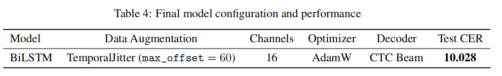
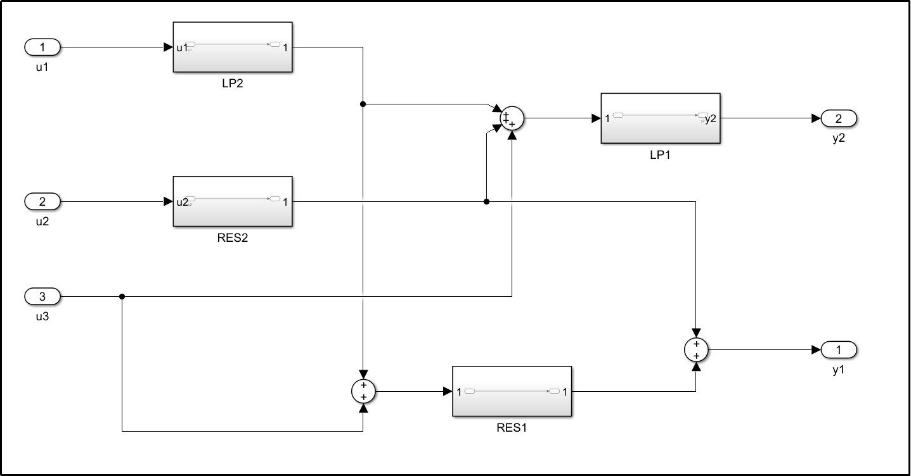
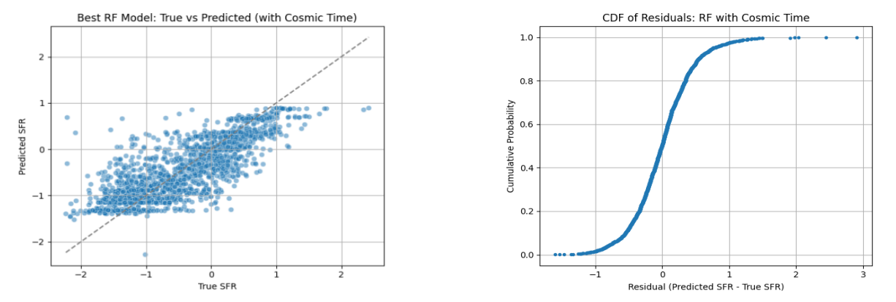
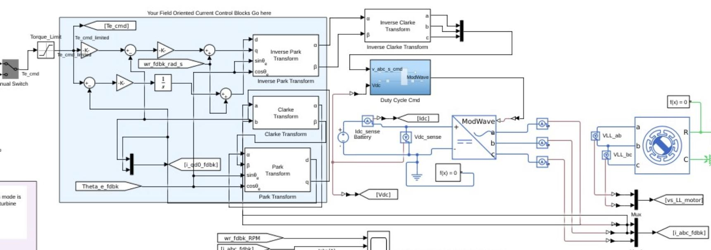
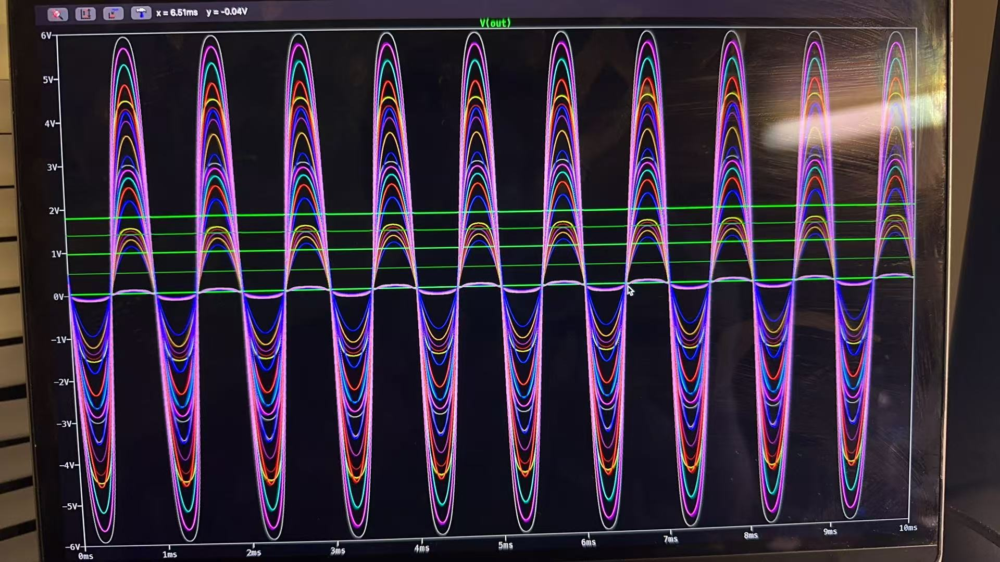
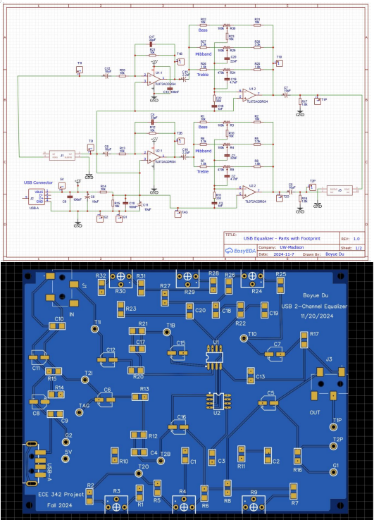
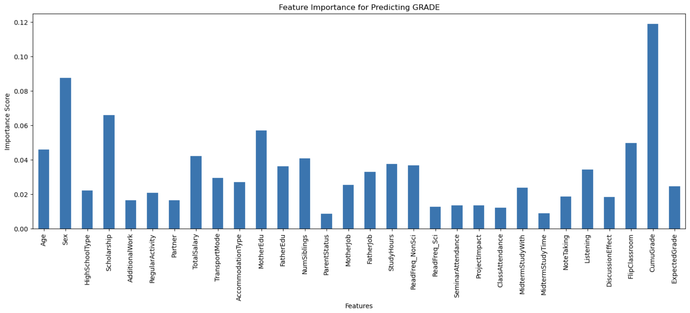

Decoding Keystrokes from sEMG Signals Using Deep Neural Networks

Developed and evaluated multiple deep learning architectures (TDS CNN, LSTM, BiLSTM, and CNN-BiLSTM) for decoding keystrokes from sEMG signals using the emg2qwerty dataset. Experiments show that BiLSTM achieves the lowest character error rate (CER), while techniques like data augmentation, increased electrode channels, beam search decoding, and regularization improve performance with trade-offs in complexity and computation. The project highlights key design trade-offs between accuracy, generalization, and efficiency in EMG-based typing systems.
(ECE C247A)
Data-Driven System Identification and Reduced-Order State-Space Modeling

This project presents a systematic, data-driven approach to identifying and modeling a multi-input, multi-output (MIMO) dynamical system. Empirical pulse and frequency response data are used to construct a block Hankel matrix, from which singular value decomposition (SVD) is applied to infer the effective system order. A reduced-order state-space realization is then recovered and rigorously validated through comparisons of impulse responses, frequency responses, eigenvalue distributions, and transmission zero cancellations. The results demonstrate that appropriately selected low-order models can faithfully reproduce the dominant system dynamics while achieving a balance between modeling accuracy, physical insight, and numerical robustness.
(MAE M270A)
Prediction of Star Formation Rates in Galaxies

Developed a machine learning framework to predict the star formation rate (SFR) of galaxies using data from the Sloan Digital Sky Survey. By comparing Random Forest and MLP models, I identified Hα luminosity and redshift as the most impactful features, achieving improved accuracy through feature selection and hyperparameter tuning. This project bridges astrophysics and AI to enhance our understanding of galaxy evolution.
(Physics361)
Modeling and Control of a Wind Turbine PMSM System

Modeled and simulated the MIROMAX HMP-5000 PMSM for use in a wind turbine system. Built steady-state capability curves and validated performance using MATLAB/Simulink, including torque, voltage, and current characteristics under different operating scenarios. Designed and implemented a Field Oriented Control (FOC) strategy to achieve efficient torque control and evaluate dynamic performance.
(ECE411)
ToF Sensor
Conducted independent research on Time-of-Flight (ToF) sensor technology to explore its application in human face detection. Performed data preprocessing and trained neural networks to identify facial features with improved accuracy. Designed and evaluated multiple classification models, optimizing their performance for real-time facial recognition. The project demonstrated the potential of ToF sensors in precise and efficient human face capture for use in interactive systems.
(CATs Lab at UW-Madison)
Self-balancing Robot
Designed and implemented a two-wheeled self-balancing robot using PID control and sensor fusion. The system integrates data from an IMU and wheel encoders to maintain upright balance in real time. This project combined control theory, embedded systems, and real-world testing to achieve stable and responsive robot behavior.
(ECE439)
Field Control and Load Characteristics of a DC Machine
Validated theoretical relationships such as speed being inversely proportional to field current and directly proportional to armature voltage.Generated plots using Python to visualize these behaviors, and conducted a load test with a 40Ω resistor to evaluate machine performance under loading conditions.
(ECE304)
Enhancing Sensor Accuracy in Autonomous Driving Systems
Examined the hardware limitations of self-driving vehicles, focusing on improving the accuracy and sensitivity of sensors like LIDAR, radar, and cameras. It aimed to identify weaknesses through accident data and technical research, proposing feasible hardware solutions to enhance safety in autonomous systems.
(EGR397)
Convolutional Encoder & Viterbi Decoder
Designed and implemented a convolutional coding system using a rate-1/2 code with constraint length 5 and octal generator polynomials (23, 35). Conducted experiments on bit and burst error correction using a custom Viterbi decoder, analyzing performance across varying error patterns.
(ECE437)
Cool Guitar Effects using Real-Time DSP
Designed and implemented three real-time digital signal processing effects for electric guitar: Echo (via recursive IIR filters), Flanging (using sinusoidally varying delay), and Chorus (by summing multiple delayed signals). Leveraged Texas Instruments’ WINDSK DSP board and Code Composer Studio (CCS) to deploy each effect and analyze their acoustic characteristics in comparison to dry signals.
(ECE303)
Theremin Instrument Design

Designed and assembled a fully functional theremin by integrating subsystems including power supply, oscillators, mixers, and audio processing. The project involved hands-on PCB construction, analog circuit tuning, and systematic debugging to produce contactless, pitch-controlled sound based on hand proximity.
(ECE370)
USB-Powered Audio Equalizer Design

Designed and built a USB-powered audio equalizer circuit that allows users to independently adjust bass, mid, and treble frequencies. Used op-amps and analog filters to enhance sound quality, implemented both PCB design (2D/3D) and real-world prototyping.
(ECE342)
Prediction of Student's Grade in ML

Predicted students’ final academic performance using machine learning models based on demographic, behavioral, and academic data. Performed descriptive analysis using PCA and feature importance via Random Forest Regressor, then built classification models (Random Forest and XGBoost) to predict failure risk, performance relative to average, and exact grade.
(ECE204)
Audio Hardware Design
Comprised a comprehensive set of SystemVerilog modules and testbenches used to design and simulate audio-related digital hardware components, such as registers, arithmetic units, timers, and interface logic. It supported I2C configuration, audio scaling, and display decoding, and was likely implemented on an FPGA using Intel Quartus Prime.
(ECE352)